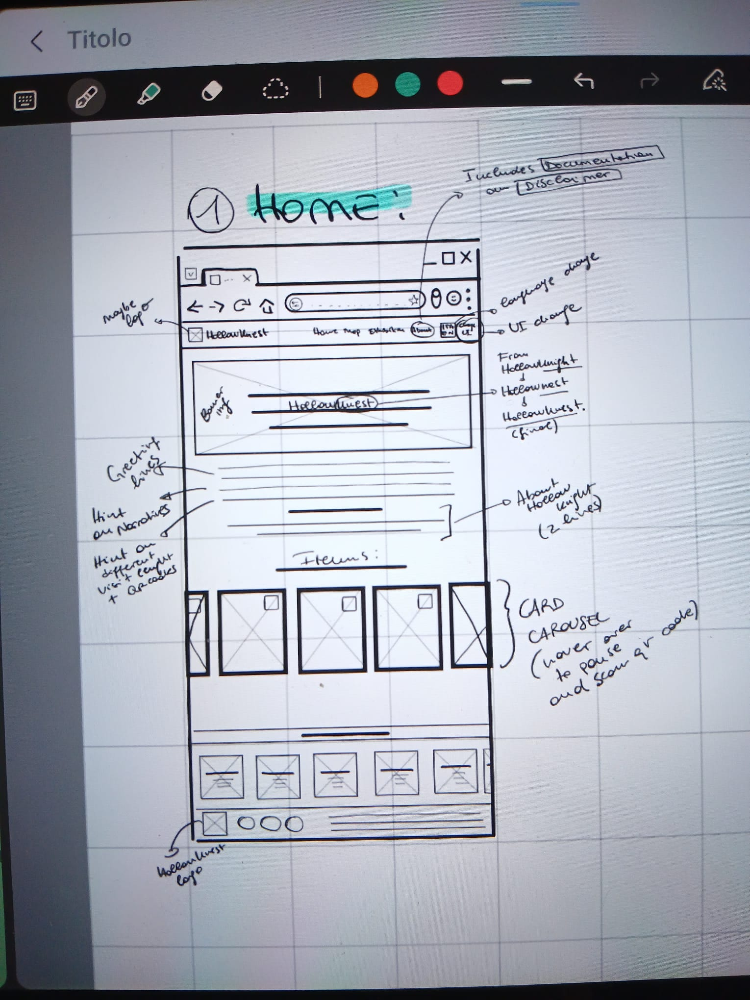
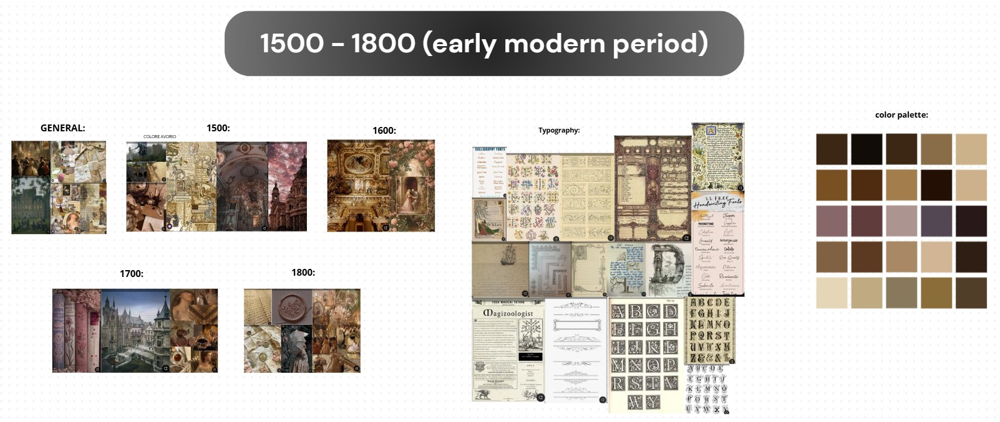
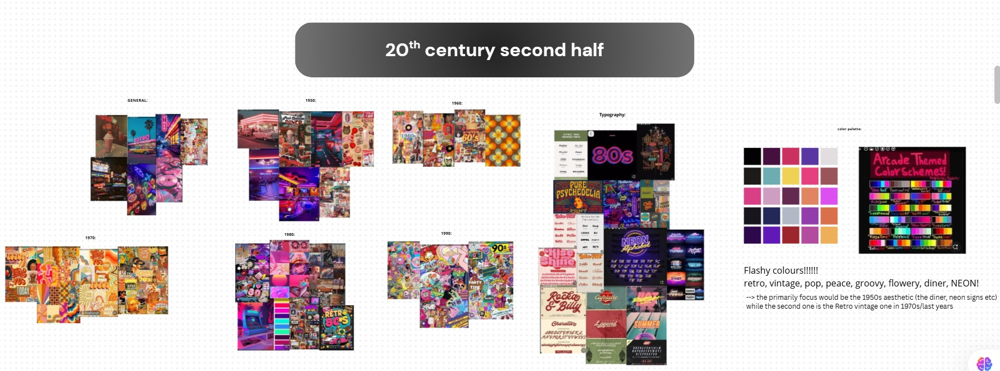

Project Documentation


Nico: Layout foundations
As the foundation for the layout of all pages (except the exhibition page), we used Bootstrap containers, giving us sufficient left and right margin such that the text isn’t excessively spread out. Additionally, we used a body section y-value margin of 5, creating enough space between the navigation bar and the top of the main section, and the footer and the bottom of the main section. Using rows provided us with the vertical layout foundations, while columns were used to horizontally separate the content. Using multiple columns inside a row made it possible to occasionally divide the content horizontally and make it easier to implement cards on certain screens.
While Bootstrap’s layout foundations were strong, responsiveness proved to be a limitation when creating the exhibition page. Although elements were laid out effectively each time the viewport was resized, the text did not get smaller and Bootstrap's fixed breakpoints inside containers often resulted in the poor placement of important elements (e.g. the two images and the metadata table). As such, employed a different approach to the layout of the exhibition section. First, we tried to roughly replicate the previously established side margins, so we created the margins responsively and put the large modal between. After that, we allocated the same amount of room for the card header, body text, and the bottom navigation bar, leaving the remaining space for the middle.
The approach taken in the map was quite different. First, each area was approximated based on the Hollow Knight map, and made rectangular to make it more in line with real museum rooms. I initially approximated about 30 grid columns to give sufficient space for all of the areas to fit; however, this and the number of rows changed throughout the process of creating the map to allow for greater flexibility in the layout. Each area spans a certain number of grid rows and columns, and also has text that takes up the same space to allow for image filtering and transitions that do not affect the overlaying text. To understand which item is in which area, hovering was implemented as a way of revealing the item that lies in each museum room (almost like an interactive preview to a real museum, made in a playful way).
Fahmida: Landing page layout
Bootstrap’s properties are very strong so building the layout for the landing page felt a bit troublesome even with basic css; especially the card carousel was first intended to be realized using a template but one time the text content wasn’t showing and also the qr code section was overlapping on the text even after putting - !important - to give priority to my styling. The 16 items weren’t showing properly so with the help of chatgpt i have implemented a card carousel with mouse scrolling and hid the scroll bar. The card’s carousel’s main purpose is to contain the qr codes linking to the metadata of each item thought for a specific kind of “persona” such as myself, a university student needing to find downloadable metadata for research purposes. Also the “read me” button links to the source of the item from which it has been taken. It has been created as a basic preview-exhibition page that had the purpose to pop up before the actual exhibition started with the possibility to choose from which narrative the user wanted to begin exploring but it will be implemented maybe in future commits. It might be incorporated in the homepage so that the user can start their journey from there. The focus of the project is the game “Hollow Knight” and the items related to each area of the game so the choice to put a banner like image to welcome the presence of the main character of the game is made on purpose, it looks like it’s going to pop out from the screen and join the visitor in its journey throughout Hallownest. - Also the name above the banner is a combination of Hollow Knight (MC) and Hallownest (the kingdom explored in the game) making the name of our exhibition: HollowKnest. At the end of the landing page there is the “team” section with the team members in responsive cards that link to our individual github profiles where the github repository for this project can be found. The github repo of the project can be also accessed while exploring the qr codes, since all of the downloadable metadata are present in a dedicated folder alongside folders with additional related photos of the areas and items that were supposed to be implemented beside the main images and might be integrated in the near future. Also for research purposes the Github repository is rich in content about the areas but most of all about the items so very much appreciated by people doing research about our domain.
Nico: Exhibition page layout and Together: Exhibition page content
The content like texts for different type of personas visiting the exhibitions, the images and the main metadata in the table were gathered in a shared google docs and then inserted in the website with JavaScript files created by Nico. An additional implementation could be hiding the texts apart from the one chosen by the visitor. The texts are differentiated by the knowledge of the content or not and language difficulty: Adult advanced (standard), Adult introductory, Young audience introductory and young audience advanced so that different type of visitors can enjoy the exhibition by responding to each of their needs. People who know about the game will learn more about cultural heritage and the items coming from all over the world and people who don’t know about the game can be surprisingly happy while dicoverung connections and even after the end of the exhibition they will find themselves searching for more connections with the game’s details and visual and will also crave for more lore details around the game. If you live in Bologna you will find connections to the ornaments on the building to the ornaments and decoration in the game and could definitely say that it might have inspired Team Cherry!. The exhibition follows the game narrative when the name of the area is clicked and there are arrows depicting where the user is going inside the areas of the map that are reflecting rooms inside a Hollow Knight dedicated museum. While the historical narrative can be explored by clicking on the buttons related to the year of production of the item. The visitor will discover items coming from the forgotten past to the most recent years.
Fahmida: 1500-1800
This style reminds us of the past we would like to live in for at least a day, It has Victorian elements and especially it is very Baroque with its emphasis on decoration and also details in writing text. The theme floats on tones of ancient papers' brownish colour. The palette is very nude and calming. The inspiration for the theme where found on pinterest boards representing the early modern days’s aesthetics with touches of red here and there. The website seems calming and echoes the beginning of a journey with uncertainty and expectations that are incorporated from the main character in the game to the visitor behind the screen hoping to discover something new but is still disorientated after landing on this website with so many styles that might clash with each other but each represent a part of the game itself. The visitor has just began its journey and dean’t know what is waiting for him.
Nico: 1900 - 1950
Fahmida: 1950 - 1990

This was also elaborated by saving pins of boards depicting the aesthetic of the second half of the 20th century. There are two main colors representing these years, one for the neon diner sign and the other for colors of freedom in those days. It has been decided to give a complete turnover to the website’s style and experiment with something bold like the main character when it has to fight his enemies.
The neon tones make you feel like in a dream, ready to actively fight alongside Hollow Knight and save everyone from the infection! The bold flashy colours have the purpose to represent the more active parts of the game, the fighting scenes but also recalling the neon diner sign, especially in the exhibition page where the title goes slightly above the card content and the card is floating along side the mouse reminding us of the neons signs that fight for themselves against the wind and make sounds like “skreeek!”. This is a style that maybe many people wouldn’t like but the people who do will love it and understand the meaning behind it!
Nico: 2035
Conceptually, this theme was inspired by the infection in infected crossroads. Though some interfaces used multiple gradients, I decided to base my inspiration on those that predominantly feature one gradient. Thematically, I drew on futuristic themes that revolve around emerging technologies, using an orange gradient accent. For the creation of background elements, I used precise tokens. They have a slight amount more blue than in other colours – bearing resemblance to The Infection, though this amount is limited so as to be congruent with Hollow Knight’s styling that uses colours that aren’t too strong. This is reinforced by the more subtle gradients found in modern UI designs. These kinds of themes had a very clear sense of hierarchy and layering with various types of atomic design units (i.e. buttons, cards, button containers, etc.)
Nico: Metadata integration with JavaScript
The JSON metadata consists of three sections: the meta section, containing starting values; the items section where each item contains attributes, identifiers for sorting, indexing, and the metadata section for all information visible to the user. The meta dictionary contains starting values that are used on each script, notably for the exhibition script. To initialise each JavaScript file, the DOM’s content is loaded via an event listener that fetches all of this data and stores it into global variables for later use. From here, the remaining document functions are run based on user events (e.g. on click) and/or when the document is initialised. Each item contains a short name (used on cards), the names of each item file. These files are accessed via a dynamic path that changes based on the user’s selected tone and competency (i.e. {tone}_{competency}). For example, an adult/advanced text can be accessed in the folder adults_advanced. Using an attribute with the name “metadata” makes it more clear which data is solely for back-end use.
Fahmida: Metadata standards
Metadata in the head of the index page: Dublincore guidelines for digital humanities projects. Metadata for the items: All the items have a qr code that link them to some type of metadata. For museum collection items it has been used the CDWA standard; The met museum has it’s own standard that has been put into csv files; other items with foundable metadata have also been incorporated in csv file trough transformation from python to json to csv or only from json to csv. All the files can be found in the github repository. The items that don’t have a related metadata file don’t have metadata that can be stored and prepared for the visitors interested.